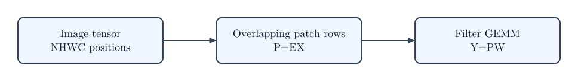
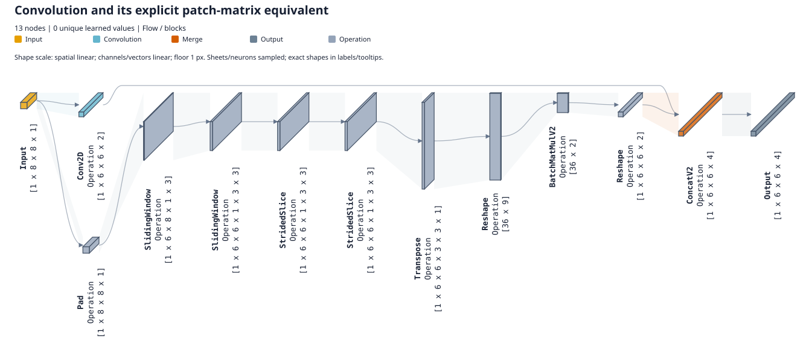
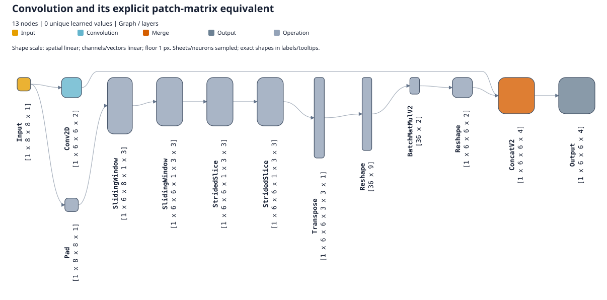
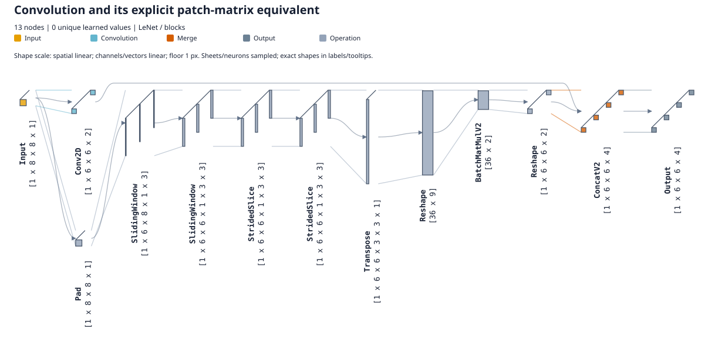
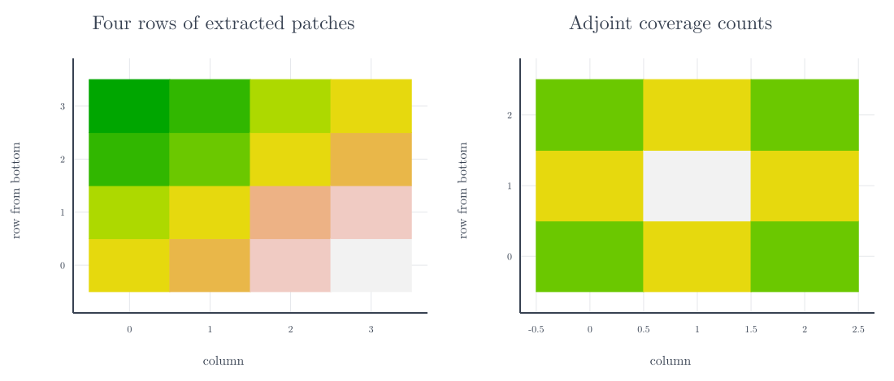

Convolution as Patch Extraction and GEMM
Abstract
Applying one filter to every image location repeats the same local dot product. We expose those patches as a tensor matrix, multiply by a reshaped filter and compare forward and backward results with convolution. An overlap map explains why patch extraction's adjoint adds contributions rather than simply reshaping them.
Source example: examples/cpp/source/nn/1_convolutional_neural_networks/1.1_fundamentals/convolution_im2col.cpp.
The method
For NHWC input X, im2col makes one row per batch/output location and one column per kernel-row/kernel-column/input-channel coordinate. A HWIO filter becomes W with shape [kh kw Cin,Cout]. Cross-correlation is Y=PW; the spatial filter is not reversed.
E is the sparse patch-selection matrix. The adjoint Eᵀ scatter-adds each patch coordinate back to its source pixel. Thus EᵀE is diagonal with coverage counts, not generally identity. The implementation uses differentiable sliding-window views, followed by a materialised matrix reshape. Padding, stride and dilation use convolution's geometry; SAME puts any odd extra zero after the image. Patch storage is O(N Ho Wo kh kw Cin); the matrix product takes O(N Ho Wo kh kw Cin Cout). The reference path targets clarity, not a memory-saving kernel.
The concept diagram below is drawn by dm::graphics::Diagram. Its editable C++
source is the complete block below; regeneration uses the same datamunge toolchain
as the numerical examples. Exports consume the saved local SVG.
#include <dm/dm.hpp>
int main() {
std::filesystem::create_directories("build");
dm::graphics::Diagram diagram;
diagram.node("n0", {0.0, 0}, "Image tensor\nNHWC positions");
diagram.node("n1", {5.2, 0}, "Overlapping patch rows\nP=EX");
diagram.node("n2", {10.4, 0}, "Filter GEMM\nY=PW");
diagram.edge("n0", "n1").edge("n1", "n2");
diagram.save_svg("build/convolution_im2col_concept.svg");
}
Simple examples
A 3×3 image containing 1 through 9 has four 2×2 VALID patches. The all-one filter produces 12,16,24,28.
Executed architecture diagram
The diagram below is generated by this model's forward function through
nn::Module::plot. Each style runs a zero-valued shape probe in inference mode;
it does not fit parameters or load a trained checkpoint. Shapes include the
example batch, and learned-value counts deduplicate shared tensors. The flow and LeNet views use named composite blocks; the graph view shows
functional layers and their actual branches. ModelPlotDetail::Operations
expands both into tensor primitives.
All views run left to right with node labels rotated 90 degrees counterclockwise.
Colors identify layer categories and are explained by the legend. The settings below
control fill/edge opacity, category colors, column/lane spacing, label content, font
size and wrapping. Flow labels show full layer metadata; graph and LeNet labels show
names and exact shapes. All three views use shared linear shape scales: face axes
follow spatial dimensions, depth follows channel count, and vector height follows
feature count. Batch size is excluded from geometry. A one-pixel visibility floor
keeps very small dimensions visible; it is disclosed in each figure. The scales can
instead use SquareRoot or Logarithmic compression explicitly. LeNet sheet counts
and graph neuron markers are bounded samples; their envelopes follow the shape scales.
Graph neuron bundles are drawn only for actual dense connections. Dots mark omitted
units. Wide diagrams can be scrolled at native size on the website.
Arrows follow the executed differentiable path; constants and deliberately
detached paths are not expanded. The visual conventions are inspired by
[VisualTorch's examples](https://visualtorch.readthedocs.io/en/latest/usage_examples/index.html).
#include <dm/dm.hpp>
int main() {
namespace n = dm::nn;
n::set_num_threads(2);
std::filesystem::create_directories("build");
n::Module model(
[&](const n::Tensor& image) {
const auto options = n::conv_options(1, n::Padding::Valid);
const auto kernel = n::ones({3, 3, 1, 2});
const auto native = n::conv2d(image, kernel, options);
const auto patches = n::im2col2d(image, 3, 3, options);
const auto explicit_result =
n::matmul(patches, kernel.reshape({9, 2})).reshape({1, 6, 6, 2});
return n::concat({native, explicit_result}, 3);
},
"Convolution and its explicit patch-matrix equivalent");
for (const auto style :
{n::ModelPlotStyle::Graph, n::ModelPlotStyle::LeNet, n::ModelPlotStyle::Flow}) {
n::ModelPlotOptions options;
options.style = style;
options.opacity = .8;
options.edge_opacity = .55;
options.funnel_opacity = .08;
options.colors.convolution = "#64B5CD";
options.colors.pooling = "#5ABF9A";
options.colors.dense = "#748BCB";
options.spacing.layer = 48;
options.spacing.lane = 48;
options.labels.type = style == n::ModelPlotStyle::Flow ? n::ModelPlotLabel::Full
: n::ModelPlotLabel::NameAndShape;
options.labels.size = 13;
options.labels.wrap = 28;
options.sizing.spatial_scale = n::ModelPlotScale::Linear;
options.sizing.channel_scale = n::ModelPlotScale::Linear;
options.sizing.spatial_size = 144;
options.sizing.channel_size = 64;
options.sizing.minimum_extent = 1;
options.sizing.max_planes = 6;
options.detail =
style == n::ModelPlotStyle::Graph ? n::ModelPlotDetail::Layers : n::ModelPlotDetail::Blocks;
const auto diagram = model.plot(n::zeros({1, 8, 8, 1}), options);
std::string output = "build/convolution_im2col_architecture.svg";
if (style != n::ModelPlotStyle::Flow)
output.insert(output.size() - 4, style == n::ModelPlotStyle::Graph ? "_graph" : "_lenet");
diagram.save_svg(output);
const auto label = style == n::ModelPlotStyle::Graph ? "Graph / layers"
: style == n::ModelPlotStyle::LeNet ? "LeNet / blocks"
: "Flow / blocks";
std::print(
"{}: {} nodes, {} distinct learned values.\n",
label,
diagram.nodes().size(),
diagram.parameter_count());
}
}Graph / layers: 13 nodes, 0 distinct learned values. LeNet / blocks: 13 nodes, 0 distinct learned values. Flow / blocks: 13 nodes, 0 distinct learned values.

Graph and LeNet views


#include <dm/dm.hpp>
int main() {
namespace n = dm::nn;
const auto type = n::DType::Float64;
auto x = n::linspace(1, 9, 9, type).reshape({1, 3, 3, 1}).detach().requires_grad_();
const auto options = n::conv_options(1, n::Padding::Valid);
const auto patches = n::im2col2d(x, 2, 2, options);
const auto output = n::matmul(patches, n::ones({4, 1}, type));
const auto overlap = n::grad(n::sum(patches), {x})[0].reshape({3, 3});
if (output.to_vector<double>() != std::vector<double>{12, 16, 24, 28})
return 1;
auto a = n::plot_tensor_map(patches, 1, 9).title("Four rows of extracted patches");
auto b = n::plot_tensor_map(overlap, 0, 4).title("Adjoint coverage counts");
std::filesystem::create_directories("build");
dm::graphics::RLayout::create(1, 2).add(a).add(b).size(1100, 470).fit_panels().save_svg(
"build/convolution_im2col_patches.svg");
std::print("Patch matrix {}; outputs {}; adjoint counts {}.\n", patches.to_vector<double>(),
output.to_vector<double>(), overlap.to_vector<double>());
}Patch matrix [1, 2, 4, 5, 2, 3, 5, 6, 4, 5, 7, 8, 5, 6, 8, 9]; outputs [12, 16, 24, 28]; adjoint counts [1, 2, 1, 2, 4, 2, 1, 2, 1].

Checking the theory
Rectangular filters, batches, channels, padding, strides and dilation share the same matrix identity. Float64 comparisons check input and filter derivatives separately.
#include <dm/dm.hpp>
int main() {
namespace n = dm::nn;
n::Generator rng(149);
const auto type = n::DType::Float64;
double forward = 0, input_error = 0, filter_error = 0;
double adjoint_error = 0, finite_error = 0;
int checked = 0;
for (auto padding : {n::Padding::Valid, n::Padding::Same})
for (int stride : {1, 2})
for (int dilation : {1, 2}) {
auto x = n::normal({2, 7, 8, 2}, 0, .3, rng, type).requires_grad_();
auto k = n::normal({2, 3, 2, 3}, 0, .3, rng, type).requires_grad_();
const auto options = n::conv_options(stride, padding, dilation);
const auto native = n::conv2d(x, k, options);
const auto P = n::im2col2d(x, 2, 3, options), W = k.reshape({12, 3});
const auto manual = n::matmul(P, W).reshape(native.shape());
const auto upstream = n::normal(native.shape(), 0, .3, rng, type);
const auto g = n::grad(n::sum(manual * upstream), {x, k});
const auto dx = n::conv2d_backprop_input(x.shape(), k, upstream, options);
const auto dw = n::conv2d_backprop_filter(x, k.shape(), upstream, options);
forward = std::max(forward, n::max(n::abs(native - manual)).item());
input_error = std::max(input_error, n::max(n::abs(g[0] - dx)).item());
filter_error = std::max(filter_error, n::max(n::abs(g[1] - dw)).item());
const auto patch_weight=n::normal(P.shape(),0,.3,rng,type);
const auto image_adjoint=n::grad(n::sum(n::im2col2d(x,2,3,options)*patch_weight),{x}).front();
adjoint_error=std::max(adjoint_error,std::abs(n::sum(P*patch_weight).item()-
n::sum(x*image_adjoint).item()));
const auto weight = W.detach();
for(const auto index : {std::int64_t{0},x.numel()/2,x.numel()-1}) {
auto delta=n::zeros(x.shape(),type);
delta.data_ptr<double>()[index]=1e-4;
auto loss=[&](const n::Tensor& image){
return n::sum(n::matmul(n::im2col2d(image,2,3,options),weight).reshape(native.shape())*upstream).item();
};
const double finite=(loss(x.detach()+delta)-loss(x.detach()-delta))/2e-4;
finite_error=std::max(finite_error,std::abs(finite-g[0].reshape({-1}).at({index})));
}
++checked;
}
if (std::max({forward,input_error,filter_error,adjoint_error})>1e-10 || finite_error>1e-8)
return 1;
std::print("{} geometries; maximum forward/input/filter errors {:.12f}, {:.12f}, {:.12f}.\n",
checked, forward, input_error, filter_error);
std::print("Patch adjoint inner-product error {:.2e}; input finite-difference error {:.2e}.\n",adjoint_error,finite_error);
}8 geometries; maximum forward/input/filter errors 0.000000000000, 0.000000000000, 0.000000000000. Patch adjoint inner-product error 1.78e-15; input finite-difference error 2.79e-12.
Fresh artifact and held-out checks
The views below are regenerated from the executed programs above. Confusion matrices use the selected checkpoint and original held-out rows. Paired ablations retain each seed and policy separately; they do not pool the same test observations into one artificial sample.
#include <dm/dm.hpp>
int main(){std::filesystem::create_directories("build");std::filesystem::copy_file("build/convolution_im2col_architecture_graph.svg","build/export_convolution_im2col_architecture_graph.svg",std::filesystem::copy_options::overwrite_existing);}#include <dm/dm.hpp>
int main(){std::filesystem::create_directories("build");std::filesystem::copy_file("build/convolution_im2col_architecture_lenet.svg","build/export_convolution_im2col_architecture_lenet.svg",std::filesystem::copy_options::overwrite_existing);}Conclusion
The tiny patch matrix explains repeated input coordinates, and the geometry sweep checks that their scatter-added gradients agree with native convolution. Explicit patches cost extra memory; the matrix formulation is a reference and teaching tool.
References
- [Dumoulin and Visin (2016), A guide to convolution arithmetic for deep learning](https://arxiv.org/abs/1603.07285).